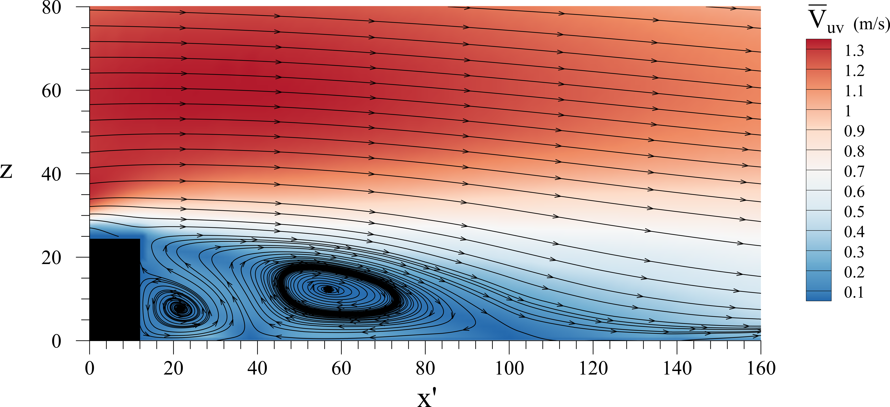

Jason Duguay, PhD.
Postdoctoral fellow Université de Sherbrooke
Sherbrooke, Québec
Phone: 819-588-0251
E-mail: duguay.jason@gmail.com
Last updated:

Streamlines showing recirculation zone in the lee of a bed-mounted bar. The data used to make this image was obtained using stereoscopic particle image velocimetry (sPIV) in an experimental flume.
Publications
The following sections present the titles of peer-reviewed technical articles which I have published during the course of my Master and Phd programs. I have also included the titles of articles that are presently in review and titles for articles that are currently under preparation.
Published:
- Duguay, J.M. and Foster, B. and Lacey, R.W.J. and Castro-Santos, T. (2018). Sediment infilling benefits rainbow trout passage in a baffled channel. Ecological Engineering, 125, 38-49.
- Duguay, J.M. and Lacey, R.W.J. and Castro-Santos, T. (2018). Influence of baffles on upstream passage of brook trout and brown trout in an experimental box culvert. Canadian Journal of Fisheries and Aquatic Sciences, 76, 28-41.
- Duguay, J.M. and Lacey, R.W.J. and Gaucher, J. (2017). A case study of a pool and weir fishway modeled with OpenFOAM and FLOW-3D. Ecological Engineering, 103, 31-42.
- Duguay, J.M. and Lacey, R.W.J. (2015). Effect of Fish Baffles on the Hydraulic Roughness of Slip-Lined Culverts. Journal of Hydraulic Engineering (ASCE), 141(1), 04014065.
- Duguay, J.M., Jay Lacey, R.W. (2015). Numerical study of an innovative fish ladder design for perched culverts. Canadian Journal of Civil Engineering, 43 (2), 173-181.
In review:
- Duguay, J.M. and Lacey, R.W.J. (2019). Experimental validation of a two-phase Euler-Euler approach for predicting bubble induced recirculation in a rectangular tank. Currently under revision in the Journal of Water Research.
In preparation:
- Duguay, J.M. and Lacey, R.W.J. (2019). Experimental evaluation of Euler-Euler approach for modeling bed-load transport.